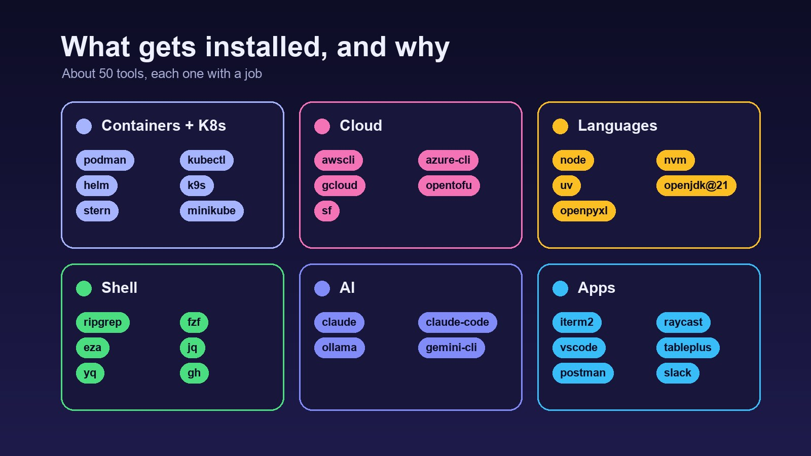

What Gets Installed, and Why
My mac-setup repo installs about 50 Homebrew formulae and casks. This is a tour of what they are, grouped by the job they do, and why each group is on my machine.

The first post in this series covered how the repo installs a machine. This one looks at what it installs. The list lives in one file, so every item is a choice, and each choice should be easy to explain. Here is how I think about the groups, and the reason behind each one.
Containers and Kubernetes
This is the biggest group in the repo. podman runs containers without a background daemon, and it works as a drop-in replacement for the Docker CLI. podman-desktop gives me a window for the same containers when I want one. crane and skopeo inspect and copy container images between registries without pulling them to my machine first.
For Kubernetes itself, kubectl is the official CLI and the one everything else builds on. helm installs applications onto a cluster, and kustomize customises plain YAML without templating. kubectx switches between contexts and namespaces quickly, k9s is a terminal UI for watching a cluster, stern tails logs from many pods at once, and minikube runs a small local cluster. lens is the graphical version for when I want to click around instead.
Cloud and infrastructure
Each cloud has its own CLI, and the one that matches the account you work in needs to be installed and authenticated. awscli, azure-cli, and gcloud-cli cover the three big clouds. opentofu is the open-source fork of Terraform, for describing infrastructure as code. sf is the Salesforce CLI, which I added to the repo most recently, for querying orgs and metadata from the terminal.
Languages and data
node and nvm cover JavaScript and TypeScript tooling, and nvm switches Node versions per project. uv manages Python packages and projects quickly, and openjdk@21 is there for JVM projects. openpyxl is a Python library for reading and writing spreadsheets from scripts.
Shell tools
These make the terminal faster to use. ripgrep searches code and text far faster than plain grep. fzf is a fuzzy finder for files, history, and branches. eza is a more readable ls, jq and yq query JSON and YAML, httpie makes API calls readable, and direnv loads per-project environment variables. gh is the GitHub CLI for pull requests and issues without leaving the terminal.
The repo also keeps shell scripts honest. shellcheck finds bugs in shell scripts, and shfmt keeps their formatting consistent. mkcert creates locally trusted HTTPS certificates, so local services don't show browser warnings.
AI tools
claude is the desktop app, and claude-code is the coding agent in the terminal. gemini-cli is the Google equivalent, in the terminal. ollama runs open models locally, so requests stay on your machine.
Apps
iterm2 is the terminal, and bettercmdtab improves command tab completion in it. raycast replaces Spotlight as a launcher. visual-studio-code is the editor, and font-hack-nerd-font gives the prompt its icons. tableplus queries databases through a GUI, postman tests HTTP APIs, and libreoffice handles spreadsheets that need to round-trip to Excel. slack is for team chat, espanso expands text snippets, logi-options+ configures my mouse and keyboard, and lulu is an outbound firewall that alerts me when something connects to the network.
Your list will look different
Nothing here is a recommendation. The value is in having a list and being able to say why each item is on it. Go through yours once, and remove anything you can't explain. The next time you add one, write a line about it in the commit message, so the reason survives.